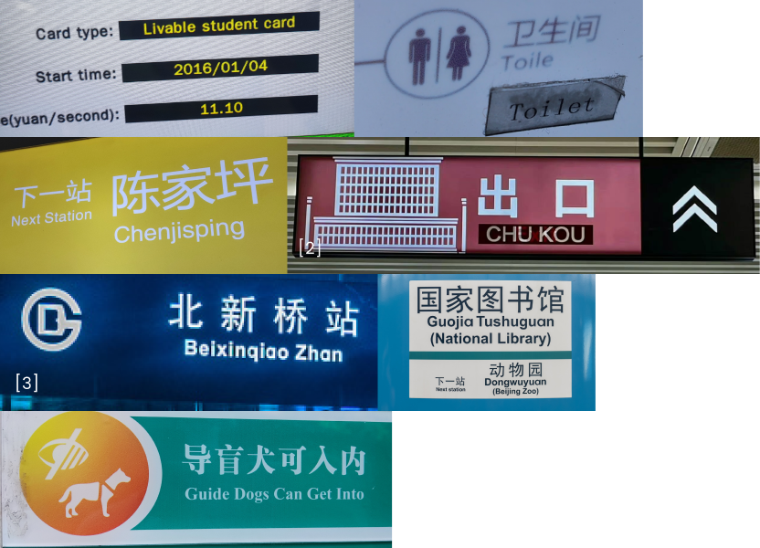
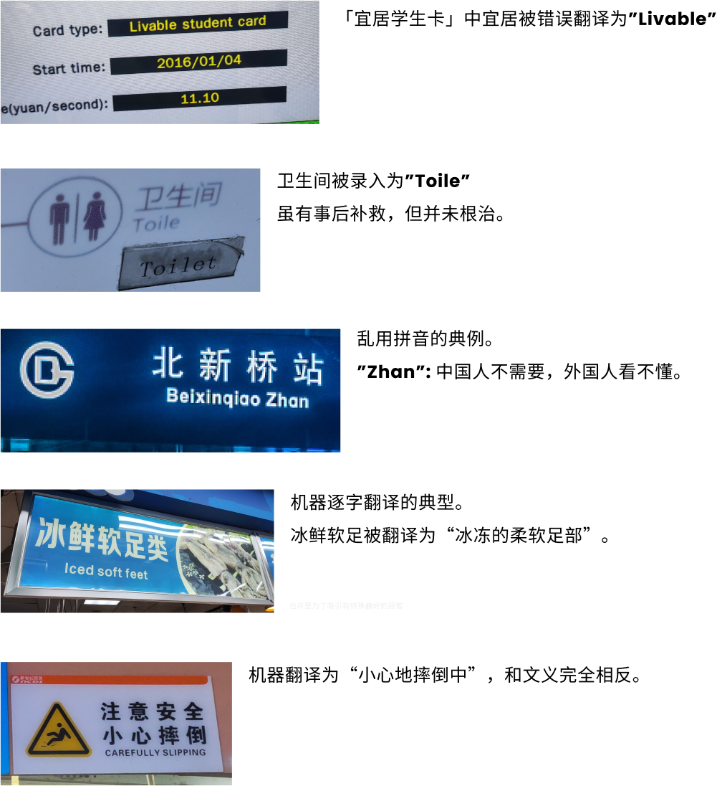

家乡招牌外语翻译现状调查
高一 (8) 班 许家鑫
[1] 摘要
自从改革开放以来，我国城市人口逐渐变得多样化，日常生活中的外语标牌也如雨后春笋一般纷纷萌发出来。然而，由于我国外语教育的相对不完善，部分标牌仍然存在着许多令人哭笑不得的明显问题。作为高中生，我们应该思考其背后的原因并寻求改善和解决的方法。
调查背景与目标
Background & Goal
随着我国外语教育的普及和机器翻译的不断进化，获取外语翻译的途径越来越多。一般来说，即使使用机器翻译也需要人工后期校对，才能获得优质的外语翻译，但一些部门或单位受技术能力和自身意愿限制，可能会直接使用机械翻译的译文排版到成品标牌上。
本调查遵从实事求是，科学精神的指导思想，主要列举外语翻译中出现的各类问题，思考并指出问题的根本原因，以及探讨可能的解决方案。
调查步骤与方法
Steps & Methods
- 实地调查：观察重庆的各类标牌文字，并作记录。
- 网络检索：查询其他地区同类现象，并作记录。
- 实践思考：探索各类翻译技术，推测和验证问题原因。
调查内容与分析
Content & Analysis
调查的标牌类型
- 市政导视标牌：市政等部门在公共场合设立的引导性标牌和提示语。
- 公共服务标牌：公交公司，轨道集团等公共服务提供方在其运营场所设立的引导性标牌和提示语。
- 社会自设标牌：企业或个人设立的标牌和提示语。
标牌样本
- 市政导视标牌

- 公共服务标牌
 - 社会自设标牌

翻译问题类型
- 机器翻译错误

由于直接使用机器翻译而缺少校对工作导致的语法错误和文义不通等问题。
- 信息录入错误

人工翻译过程中信息录入（即打字）错误造成的错字问题。
- 不当拼音使用

在外语翻译处简单粗暴地使用拼音造成的「中国人外国人都看不懂」的问题。
部分详细分析
结论
Conclusion
在我国城市走向国际化的同时，各个领域仍然存在大量含有错误的不合规标牌。这些标牌轻则影响阅读体验，重则让人完全摸不着头脑。
使用机器翻译在实际使用中常会产出令人啼笑皆非的错误译文，虽然相对省时省力但并不可靠。
人工翻译也受标牌制作者文化水平和精力限制，可能产出多种错误译文。
还有少数地方为了「彰显文化自信」以及偷懒大面积使用汉语拼音，使得译文毫无意义。
以上问题都对我国国际化持续产生着负面影响，不应被广大群众和有关部门忽视。
建议
Advice
- 个人
遇到错误翻译及时记录，有空时反映给主管个人/单位/部门。
- 单位/部门
翻译标牌时，如文本量大，可外包给专业翻译机构进行翻译或招募有丰富外语经验的译员；如文本量小，可采用机器翻译+人工校对的方式。定期开展译文检查并听取群众反馈，对于已经铺设的标牌，应及时纠正，重新排版印刷。
参考资料
Reference
[1] 封面图由三部分组成，出处如下。上：黑龙江某市地铁出口标志（网络图片） ，中：小心地滑标牌（新世纪超市），下：灭火器标牌（永辉超市）
[3] 某首都地铁新标志（网络图片）
其他信息
Misc.
本文提及的地方/单位
- 重庆轨道交通
- 新世纪超市
- 永辉超市（重庆）
- 沃尔玛（重庆）
- 黑龙江某市地铁
- 某首都地铁
- 世界第三大银行
- 成都某连锁超市
感谢这些单位提供的标牌样本。
鸣谢
日本世嘉公司 Crypton Future Media（克理普敦未来媒体） 《银行家》杂志 星街彗星（星街すいせい，日本）感谢这些个人和单位为本报告提供的帮助。